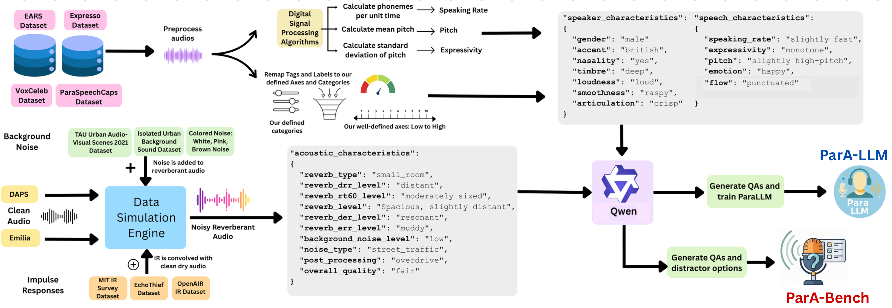

Interspeech
ParA-LLM: A Unified Approach to Paralinguistic and Acoustic Speech Understanding
Work done while Nishit Anand and Rithesh Kumar were at Adobe Research.
Abstract
Recent advances in Audio LLMs have achieved human-level speech recognition, yet existing systems struggle to capture paralinguistic aspects such as speaker traits, expressive variations, and environmental acoustic conditions. To address this, we design a framework of 22 paralinguistic features and create a dataset of over 1.2M Audio-QA pairs. We develop ParA-LLM, trained with a two-stage curriculum: first on single-attribute questions to build foundational knowledge, then on multi-attribute questions for joint reasoning over speaker and acoustic characteristics. We also release ParA-Bench, a benchmark of 6,000 multiple-choice questions across speaker-speech, acoustic, and mixed categories, where frontier models like GPT-4o-Audio achieve only 36% accuracy. ParA-LLM surpasses state-of-the-art Audio LLMs by 7.5% on ParA-Bench, with additional gains of 1.13% on MMAU-Pro Speech and 7.49% on MMAR Speech.
Highlights
Large-scale dataset & curriculum
Over 1.2M annotated audio samples with structured annotations across 22 paralinguistic characteristics, and a two-stage curriculum that progressively builds understanding from atomic to joint multi-attribute reasoning.
ParA-LLM model
A unified Audio LLM for paralinguistic and acoustic understanding, supporting free-form joint question answering across acoustic, speaker, and speech characteristics, surpassing state-of-the-art Audio LLMs by 7.5% on ParA-Bench.
ParA-Bench benchmark
A 6,000 multiple-choice question benchmark to comprehensively evaluate a model's ability to understand and reason over paralinguistic and acoustic characteristics, where frontier models achieve only 36% accuracy.
Method

22 paralinguistic characteristics
We define a structured taxonomy of 22 characteristics spanning 10 acoustic, 7 speaker-intrinsic, and 5 utterance-level speech properties. Acoustic properties use signal-based metrics (e.g., DRR, RT60, SNR), while speaker and speech attributes use natural-language descriptors with majority annotator agreement. Each property is defined along a continuous axis (e.g., speaking rate, noise level), a binary attribute (e.g., nasality), or a multiclass category (e.g., articulation, flow).
Acoustic simulation engine
An acoustic simulation engine augments clean speech (EARS, Emilia, Expresso, VoxCeleb) by convolving with measured room impulse responses (MIT IR Survey, EchoThief) and mixing in background noise (TAU Urban Audio-Visual Scenes, Isolated Urban Sound, plus synthetic colored noises) at varying SNRs. It produces real-world-alike acoustic scenes with varying room sizes, geometries, wall materials, speaker distances, and ambient noises, and applies post-production effects such as clipping, dynamic range compression, and overdrive.
QA generation: template + LLM in-context learning
After annotation we obtain over 700K unique audio samples with metadata. In Stage 1, template-based generation produces 688K atomic QA pairs over 306K samples, each targeting exactly one attribute (e.g., “What is the gender of the speaker?”). In Stage 2, Qwen2.5-7B with in-context learning generates 513K multi-attribute QA pairs over 217K samples, jointly querying multiple attributes at once.
Two-stage curriculum: atomic → multi-attribute
ParA-LLM is initialized from Qwen2-Audio-7B-Instruct and trained with LoRA (rank 128, alpha 256, dropout 0.1) applied to the audio encoder, multimodal projector, and LLM. Stage 1 trains on atomic single-attribute QA to build foundational paralinguistic knowledge; Stage 2 loads the Stage 1 adapter and continues on multi-attribute QA to develop compositional joint reasoning across speaker, speech, and acoustic characteristics.
ParA-Bench
A held-out set of 6K samples is strictly reserved for evaluation, disjoint from training audio, RIRs, and noise. ParA-Bench draws 6,000 multiple-choice questions from this set, evenly split across speaker-speech, acoustic, and mixed categories. To avoid self-referential bias, benchmark QA pairs are generated with Mistral-Small-3.2 (a different model family from the Qwen2.5-7B used for training QA).
Results
ParA-Bench accuracy across categories
Table 1. Accuracy of models on ParA-Bench across speaker-speech, acoustic, and mixed categories. Bold denotes the best and underline the second-best in each category.
| Model | Speaker-Speech | Acoustic | Mixed | Overall |
|---|---|---|---|---|
| Qwen2 Audio | 34.80 | 23.45 | 25.90 | 28.05 |
| Voxtral | 51.95 | 29.20 | 35.25 | 38.80 |
| Audio Flamingo 3 | 34.35 | 38.75 | 33.40 | 35.50 |
| Mellow | 3.60 | 3.60 | 3.80 | 3.67 |
| R1-AQA | 26.60 | 19.00 | 21.20 | 22.27 |
| Qwen2.5 Omni 3B | 20.85 | 9.45 | 10.35 | 13.55 |
| Qwen2.5 Omni 7B | 21.30 | 11.75 | 10.35 | 14.47 |
| GPT-4o-Audio | 32.00 | 41.85 | 34.25 | 36.03 |
| ParA-LLM (Ours) | 55.85 | 34.80 | 39.95 | 43.53 |
Effect of two-stage curriculum on broader benchmarks
Table 2. Performance of ParA-LLM trained with curriculum learning compared to the Qwen2-Audio-Instruct baseline, demonstrating steady improvement across the benchmarks. Bold denotes the best.
| Model | MMAU-Pro (Speech) | MMAR (Speech) | MMAR (Sound-Speech) | MMAR (Overall) |
|---|---|---|---|---|
| Qwen2-Audio-Instruct | 40.96 | 35.37 | 40.83 | 36.00 |
| ParA-LLM Stage 1 | 41.98 | 37.76 | 45.87 | 39.40 |
| ParA-LLM Stage 2 | 42.09 | 42.86 | 46.33 | 39.70 |
ParA-Bench
ParA-Bench is a 6,000 multiple-choice question benchmark spanning all 22 paralinguistic and acoustic characteristics, sampled from a strictly held-out test set. All questions are multi-attribute, evenly distributed across three categories:
Questions on speaker-intrinsic and utterance-level speech characteristics.
Questions on acoustic environment characteristics.
Questions jointly querying both acoustic and speaker-speech characteristics.
Distractor options are generated by re-prompting the model for three plausible but incorrect alternatives, and human verification was conducted on a subset of 300 questions to ensure reliability. On a small controlled study, human accuracy reached 78% versus 36% for state-of-the-art GPT-4o-Audio, underscoring how far paralinguistic understanding remains from being solved.
BibTeX
@inproceedings{anand2026parallm,
title = {ParA-LLM: A Unified Approach to Paralinguistic and Acoustic Speech Understanding},
author = {Anand, Nishit and Su, Jiaqi and Chen, Ke and Wang, Yunyun and
Manocha, Dinesh and Duraiswami, Ramani and Kumar, Rithesh and Jin, Zeyu},
booktitle = {Proc. Interspeech},
year = {2026}
}